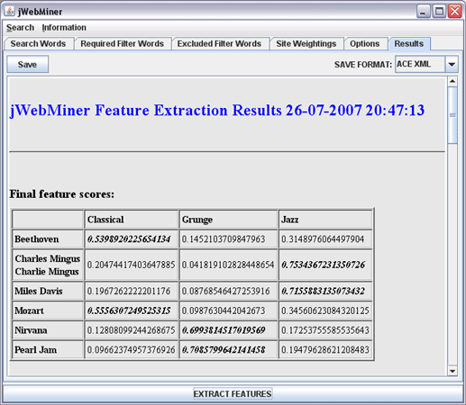
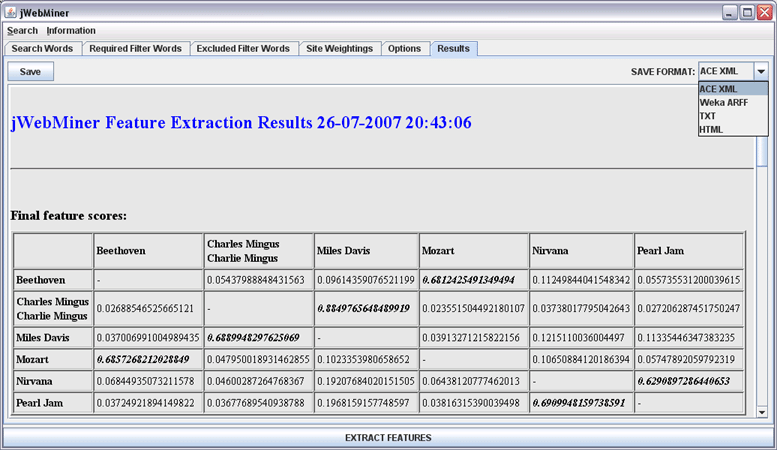

| Results Panel |
|---|
The Results Panel is a GUI panel allowing users to view and/or save the results of jWebMiner feature extractions, including final feature values, hit counts at various intermediate processing stages and complete details of the settings used during feature extraction. This panel is is disabled until at least one feature extractions has been completed and is automatically brought to the foreground of the GUI when feature extraction is complete.
Types of Reports
The types of reports that will be displayed after a feature extraction is completed depend on the settings chosen by the user in the INFORMATION TO REPORT section of the Options Panel. Each of the reports chosen there will be generated and displayed in the Results Panel after feature extraction is complete. These reports are each presented in the form of tables whose rows and columns are labeled based on the search strings entered in the Search Words Panel (except for the Search Settings Used reports). Synonyms defined in the Search Words Panel will be grouped together in row and/or column labels.
The types of reports are explained in the following list. Note that they will be generated in the order that they are listed below and that each report type may involve the generation of multiple separate report tables, based on the current search configuration.
The Feature Score Report is useful for manually examining final feature values. The Search Settings Used Report is useful for keeping a record of the parameterization used for feature extraction. The other reports can be useful for debugging and/or understanding why feature scores are as they are, as they can be used to view processing at various preliminary stages.
All successful feature extractions will result in the final feature values being stored in memory so that they may be saved, even if no reports are selected to be generated in the INFORMATION TO REPORT section of the Options Panel. The date and time of the feature extraction will also always be displayed in the title area of the Results Panel after feature extraction has ended.
Feature and Page Count Values
The numerical values displayed in the Feature Scores Report and the various intermediate hit count reports indicate the relative strength of the cultural link between the search string in each entry's row and the search string in its corresponding column. The absolute magnitude of each numerical value is not necessarily significant, however. What is significant is the relative magnitude of values in each row (or each table as a whole, if the By row rather than overall option is not selected in the Options Panel).
The nature of each report table depends on whether a feature extraction was a "co-occurrence analysis" or a "cross tabulation analysis", as selected in the Search Words Panel. Figure 1 shows an example of the final feature values for a cross tabulation extraction, as explained in the figure's caption. In the terminology of data mining, the label of each row is essentially an instance name and the label of each column is essentially a class name. The feature value in each entry of each row can be considered to represent an instance's measured membership score in each class relative to the other classes (this blurry distinction between features and classes is different from the traditional separation between the two terms).

Figure 1: A screenshot of the Results Panel, showing the final feature values extracted in a cross tabulation analysis of the search strings shown in Figure 2 of the Search Words Panel. The bold italic values indicate the highest values in each row. The feature values in this table essentially represent the classification of the name of each artist into musical genres based on relatively how often they appear on web pages together. Note that the user could scroll down the view in order to view hit counts at various intermediate processing stages or the details of the settings used in the feature extraction. Note also that "Charles Mingus" and "Charlie Mingus" are grouped together in the table because they are defined as synonyms in Figure 2 of the Search Words Panel.
An example of co-occurrence analysis can be seen in Figure 2. The values in the report tables generated during co-occurrence analysis, in contrast to those generated in cross tabulation analysis, measure relative pairwise similarity between each term in a set of terms. The difference between what is referred to here as co-occurrence analysis and cross tabulation analysis is described in more detail in the Search Words Panel section of this manual. With specific respect to reports, it is useful to add that the results tables for co-occurrence analyses will always be square matrices. Furthermore, the entries on the diagonal are not significant in the final results, since they represent the similarity between each search string and itself (this is significant during intermediate processing, however, and can be seen in some of the intermediate reports labeled "C(a)"). As a result, the entries on the diagonals of the output tables co-occurrence analyses are marked with a hyphen in reports and are stored as 0.0 when saved as feature values.

Figure 2: A screenshot of the Results Panel, showing the final feature values extracted in a co-occurrence analysis of the search strings shown in Figure 1 of the Search Words Panel. The bold italic values indicate the highest values in each row. The feature values in this table essentially represent the similarity of the artists' names based on relatively how often they appear on web pages together. Note that the user could scroll down the view in order to view hit counts at various intermediate processing stages or the details of the settings used in the feature extraction. Note also that "Charles Mingus" and "Charlie Mingus" are grouped together in the table because they are defined as synonyms in Figure 1 of the Search Words Panel. The SAVE FORMAT combo box has been selected by the user in order to choose the format to save feature values in.
Saving Feature Values and/or Reports
The reports displayed in the Results Panel can be saved exactly as they appear in the GUI as HTML files to be easily read by humans in the future. Final feature values can also be exported to ACE XML, Weka ARFF or newline delimited text files to facilitate post-processing by software such as ACE or Weka.
Files can be saved by first choosing the desired file format from the SAVE FORMAT combo box at the top right of the Results Panel and then pressing the Save button at the top left.